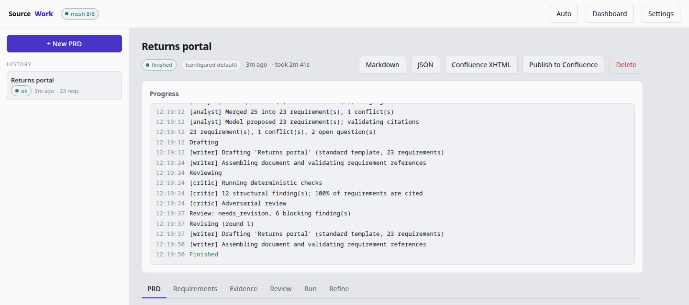
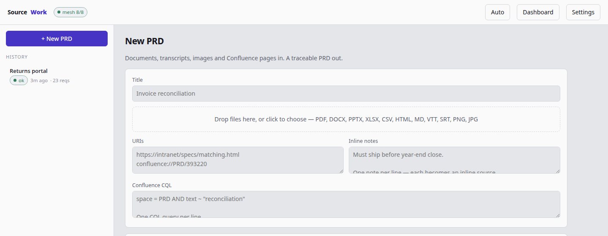

Agentic PRD generation · open source
A model cannot invent a citation.
Meeting recordings, PDFs, wireframes and wiki pages go in. What comes out is a PRD where every requirement carries the quote that justifies it — and the page, the timestamp, the speaker, the region of the image where you can go and check.
every source_ref is checked against the real evidence ids, and invented ones are stripped. A model that hallucinates a citation loses the citation.
Every requirement points back at the thing that justifies it.
This is one requirement from the demo run committed in the repository — 59 requirements built from 170 pieces of evidence across five sources, generated and committed unedited.
Respect the peak trading deployment freeze
-
02-it-architecture-constraints.pdf · p.1
Deployments are blocked between 15 December and 6 January, the peak trading freeze.
-
03-kickoff-meeting.vtt · 00:06:06 · Lena Fischer
There is a deployment freeze from the fifteenth of December to the sixth of January.
And where it reasoned instead of read, it says so.
The system must handle at least twice the baseline monthly return volume (approximately 16,400 returns in a peak month).
Nobody in that meeting said 16,400. Two people said “about 8,200 returns per month” and “return volume more than doubles in January”. The number is the model's arithmetic — and derived is the document telling you to check it, rather than hoping you don't.
Two loops around one gate.
Everything upstream of the analyst produces evidence, and the analyst is the only place a citation can be created — or lost. Around it run two feedback loops on very different clocks.
The outer loop runs on human time, and closes back on the evidence. A PRD ends by saying what it could not determine. Answer one of those open questions and your answer is ingested as a new source — so the requirement it settles can cite it like anything else, while the previous version's evidence is carried rather than re-read. That produces a new version rather than an edit:
REQ- ids survive the rewording, and
untouched requirements keep the citations they already had.
Nothing enters the pipeline except evidence with a locator.
A locator means something different in every medium, so it is kept verbatim and shown to the reader rather than normalised into uselessness.
| Goes in | Read by | Locator you get back |
|---|---|---|
| Documents | PDF, DOCX, PPTX, XLSX, CSV, Markdown, HTML | p.12 · #heading |
| Meetings | VTT, SRT, JSON transcripts | 00:14:32 · Lena Fischer |
| Images | Mockups, screenshots, whiteboards, diagrams | region: top-left |
| Confluence | CQL search, pages and attachments | #anchor |
| Notes | Free text you type in yourself | the line |
It does not need your API key.
If you are signed into a coding CLI, the whole pipeline runs on that subscription with nothing plumbed through SourceWork. If you would rather nothing left the machine at all, every model can be local — the confidential documents you would feed this thing are exactly the ones you should not be uploading.
- claude-code
- codex-cli
- copilot-cli
- opencode-cli
- agy-cli
- litellm any hosted provider
- llama.cpp entirely local
Models are chosen per role: a cheap one for extraction, a strong one for the analyst, and a different family for the critic, so the review is adversarial rather than agreeable.
Eight agents, each one an independently deployable service.
They speak A2A v1.0 over JSON-RPC and publish an agent card. The orchestrator hardcodes nobody's abilities — it reads the cards at start-up and dispatches by skill, so the web UI is just another client, not a ninth agent.
| Agent | Does |
|---|---|
| Orchestrator | Routes inputs, sequences the pipeline, runs the review loop |
| Document Ingestor | Documents and spreadsheets → evidence |
| Image Analyst | Mockups, screenshots, whiteboards → evidence |
| Meeting Analyst | Transcripts → evidence and a decision log |
| Confluence Connector | CQL search, page read, idempotent publish |
| Requirements Analyst | Cluster, de-dup, MoSCoW, conflicts, open questions |
| PRD Writer | Narrative, Markdown, Confluence storage XHTML |
| PRD Critic | Deterministic traceability checks, then adversarial review |
Replaceable at both ends.
The mesh is reached from outside only through published agent cards, and it reaches models from inside only through one structured call. Neither end knows more about the other than it has to.
Be precise about what that guarantees.
The difference matters when you are the one signing the document.
Enforced
- Every citation resolves to evidence that really was extracted.
- Invented ids are stripped before you ever read them.
- A requirement left uncited is forced to render as derived.
Not enforced
- That the cited evidence actually supports the claim.
- No mechanical check catches that. The traceability matrix exists so a human can, in one pass, with the quote sitting next to the requirement.
See the whole thing work before giving it credentials.
make demo runs all eight agents over real HTTP and real A2A against a deterministic fake model. No key, no model, no network.
# the full pipeline, offline, in about a minute git clone https://github.com/DavideAresta/sourcework make install make demo # then point it at something real sourcework app # the mesh and the web UI in one process sourcework doctor # what is configured, and what is reachable


100% of requirements are cited — and
then the critic sending six blocking findings back for a re-draft, which is the inner
loop of §4 actually running. In 0.4, a stage railway and hero line show where a
live run is and who is working, and an Architecture view maps the eight-agent mesh
with live health. The interface follows your system theme and can be pinned
to either, and the light one is the palette of this page.
The same UI, served as a service.
A sibling package, sourcework-cloud, mounts this exact web UI over
Postgres instead of the laptop's SQLite file — tenant-scoped from the first row,
and behind a sign-in from the first request.
It is a shell today, deliberately behavior-identical to the local app: one tenant,
a development token for sign-in, and runs that finish in this process. Identity
(Google and GitHub), per-tenant settings and worker infrastructure land on top
without the routes moving. It is web-only by construction — no CLI — and
python -m sourcework_cloud serve is the only way it starts. Nothing
in it is wired into the laptop distribution, and nothing here requires one.